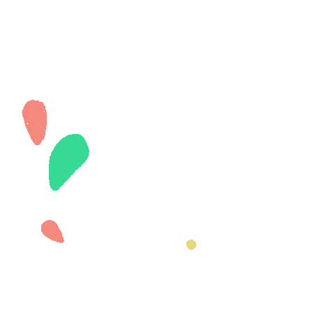

<div class="loading" *ngIf="isLoading">
    
</div>
<div class="container-fluid px-5 py-3">
    <div class="row mb-4">
        <h3 class="col text-white">Marcadores</h3>
        <button class="btn btn-forest col-3" (click)="openModal(newEntityModal)">Nuevo marcador</button>
    </div>

    <div class="table-container">
        <table class="table table-light table-hover text-center">
            <thead class="thead-aqua">
            <tr>
                <th>Nombre</th>
                <th>Archivo</th>
                <th>Acciones</th>
            </tr>
            </thead>
            <tbody>
            <tr *ngFor="let item of marcadores">
                <td>{{item.Nombre}}</td>
                <td>{{item.UrlTarget}}</td>
                <td>
                    <a
                            class="icon mdi mdi-pencil text-yellow"
                            data-toggle="tooltip" title="Editar"
                            (click)="editModal(EditEntityModal,item)">
                    </a>
                    <a
                            class="icon mdi mdi-trash-can text-red"
                            data-toggle="tooltip" title="Eliminar"
                            (click)="deleteModal(confirmDelete,item.IdTarget!)">
                    </a>
                </td>
            </tr>

            <tr>
                <td *ngIf="marcadores.length == 0" colspan="12">No se encontraron registros</td>
            </tr>
            </tbody>
        </table>
    </div>
</div>

<!-- MODAL DELETE CONFIRM -->
<ng-template #confirmDelete let-modal>
    <div class="modal-header pb-2">
        <div class="col-2"></div>
        <h2 class="modal-title text-center col">Eliminar</h2>
        <button type="button" class="close col-2 my-auto" aria-label="Close" (click)="modal.dismiss('Cross click')">
            <span aria-hidden="true" class="mdi mdi-close-thick"></span>
        </button>
    </div>
    <div class="modal-body p-3">
        <p>¿Está seguro de que desea eliminar este marcador?</p>
    </div>
    <div class="modal-footer">
        <div class="row col-12">
            <div class="col-6"><button type="button" class="btn btn-secondary w-100" (click)="modal.dismiss('Cross click')">Cancelar</button></div>
            <div class="col-6"><button class="btn btn-yellow w-100" (click)="onDelete()">Eliminar marcador</button></div>
        </div>
    </div>
</ng-template>

<!-- MODAL NEW ENTITY -->
<ng-template #newEntityModal let-modal>
    <div class="loading" *ngIf="isLoading">
        
    </div>
    <div class="modal-header pb-2">
        <div class="col-2"></div>
        <h2 class="modal-title text-center col">Nuevo marcador</h2>
        <button type="button" class="close col-2 my-auto" aria-label="Close" (click)="modal.dismiss('Cross click')">
            <span aria-hidden="true" class="mdi mdi-close-thick"></span>
        </button>
    </div>
    <form #f="ngForm" (ngSubmit)="onRegister(f.value)">
        <div class="modal-body p-3">
        
            <div class="form-group w-100 mb-2">
                <label for="target_name" class="">Nombre del marcador</label>
                <input ngModel name="nombre" #nombre="ngModel" id="target_name" type="text" class="form-control" placeholder="Ingrese el nombre del marcador" required/>
                <div *ngIf="nombre.touched && nombre.invalid" class="alert alert-danger">
                    <div *ngIf="nombre.errors?.required">El campo es requerido</div>
                </div>
            </div>
            <div class="form-group w-100 mb-4">
                <input type="file" required class="file-input"
                accept=".patt"
                (change)="onFileSelected($event)" #fileUpload>

                <div class="file-upload">

                    {{fileName || "Ningún archivo seleccionado."}}

                    <button type="button" mat-mini-fab color="primary" class="upload-btn"
                    (click)="fileUpload.click()">
                        <mat-icon>attach_file</mat-icon>
                    </button>
                </div>
            </div>
        
        </div>
        <div class="modal-footer">
            <div class="row col-12">
                <div class="col-6"><button type="button" class="btn btn-secondary w-100" (click)="modal.dismiss('Cross click')">Cancelar</button></div>
                <div class="col-6"><button class="btn btn-yellow w-100" [disabled]="!f.valid || !fileMarcador">Crear marcador</button></div>
            </div>
        </div>
    </form>
</ng-template>

<ng-template #EditEntityModal let-modal>
    <div class="loading" *ngIf="isLoading">
        
    </div>
    <div class="modal-header pb-2">
        <div class="col-2"></div>
        <h2 class="modal-title text-center col">Nuevo marcador</h2>
        <button type="button" class="close col-2 my-auto" aria-label="Close" (click)="modal.dismiss('Cross click')">
            <span aria-hidden="true" class="mdi mdi-close-thick"></span>
        </button>
    </div>
    <form form [formGroup]="editForm" (ngSubmit)="onEdit()">
        <div class="modal-body p-3">
        
            <div class="form-group w-100 mb-2">
                <label for="target_name" class="">Nombre del marcador</label>
                <input id="target_name" type="text" class="form-control" placeholder="Ingrese el nombre del marcador" required/>
            </div>
        </div>
        <div class="modal-footer">
            <div class="row col-12">
                <div class="col-6"><button type="button" class="btn btn-secondary w-100" (click)="modal.dismiss('Cross click')">Cancelar</button></div>
                <div class="col-6"><button class="btn btn-yellow w-100" [disabled]="!isValid()">Guardar marcador</button></div>
            </div>
        </div>
    </form>
</ng-template>